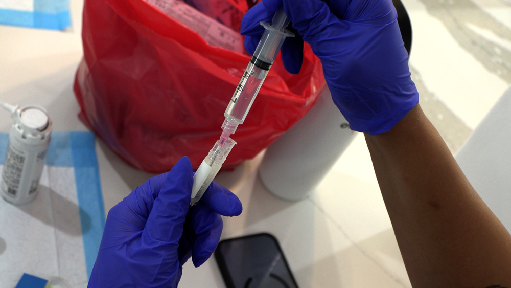

The event-day sequence from patient arrival to administration. Whether you're running a dinner seminar group treatment day or a single-patient clinic visit, this flow keeps everything organized, documented, and compliant.
Confirm hydration. Ask the patient if they drank 64 oz or more of water in the past 24 hours. If not, have them drink water now and give it 15–20 minutes before attempting IV access. Reschedule IV portion if severely dehydrated.
Review the treatment plan. Confirm which joints are being treated and whether IV is included. Cross-reference with the patient's purchase/consent documentation.
Collect signed consent. All patients must sign informed consent before any administration. Paper consent is preferred — most patients in this demographic are more comfortable with a physical document they can review at home. Have consent ready before any product is touched.
Brief patient interview / assessment. Ask about current pain levels (0–10), location, duration, any changes since initial consultation. Palpate joints being treated. Note findings on intake sheet.
Confirm no contraindications. Active infection at injection site, fever, or acute illness → reschedule. Review current medications — blood thinners do not contraindicate treatment but are noted. Active cancer or immune-suppressive conditions → consult supervising physician.
When a patient is receiving both joint injections and IV on the same day, follow this sequence:
This sequence maximizes cell viability — the IV cells thaw during the time spent on joint injections, minimizing the wait after thawing.

Every treatment session requires a completed injection sheet. This is both a clinical record and a chain-of-custody log for the product used.
| Field | Example |
|---|---|
| Patient name | John Smith |
| Date of treatment | 07/13/2026 |
| NP name / credentials | Dana Cook, NP-C |
| Product(s) used | BioFlex, BioAer, BioFlow |
| Lot number(s) | PB-2026-0441 |
| Dose administered | 2 cc BioFlex R knee; 1 vial BioFlow IV |
| Injection site(s) | Right knee, anterior-lateral; left antecubital IV |
| Patient's reported pain before (0–10) | 7/10 right knee |
| Adverse events / notes | None. Tolerated well. |
| Follow-up scheduled | Phone check-in 7 days; 90-day in-person |
For NPs new to this system, we recommend a three-phase approach regardless of the training format used — whether that's in-person observation, video review of procedures, or a combination of both:
| Phase | Format | Goal |
|---|---|---|
| Phase 1 | Observation (in-person or video) | Review full procedures, documentation, and patient interaction before administering independently |
| Phase 2 | Supervised practice | NP performs procedures with clinical support available — in person or on a live call |
| Phase 3 | Independent operation | NP operates independently; Regenerative Revival clinical team available by phone or text for questions |
Scheduling a group of 4–6 patients for Phase 2 is ideal — it exposes the NP to a variety of injection sites and scenarios in a single session. Your specific training path will be confirmed during onboarding.